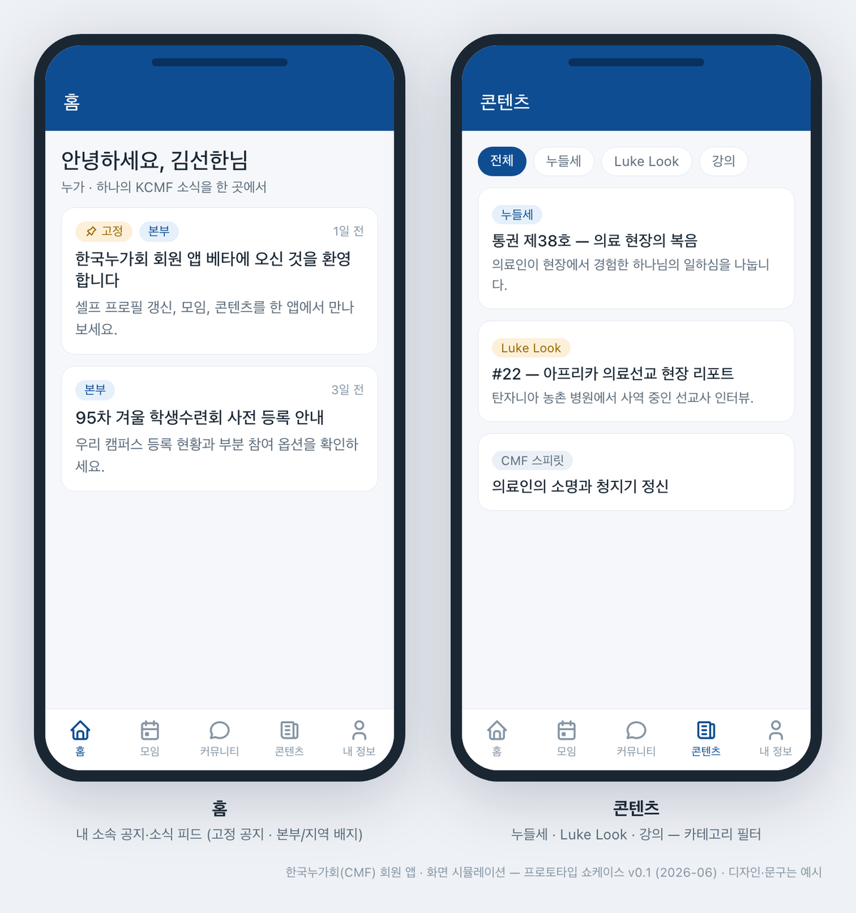
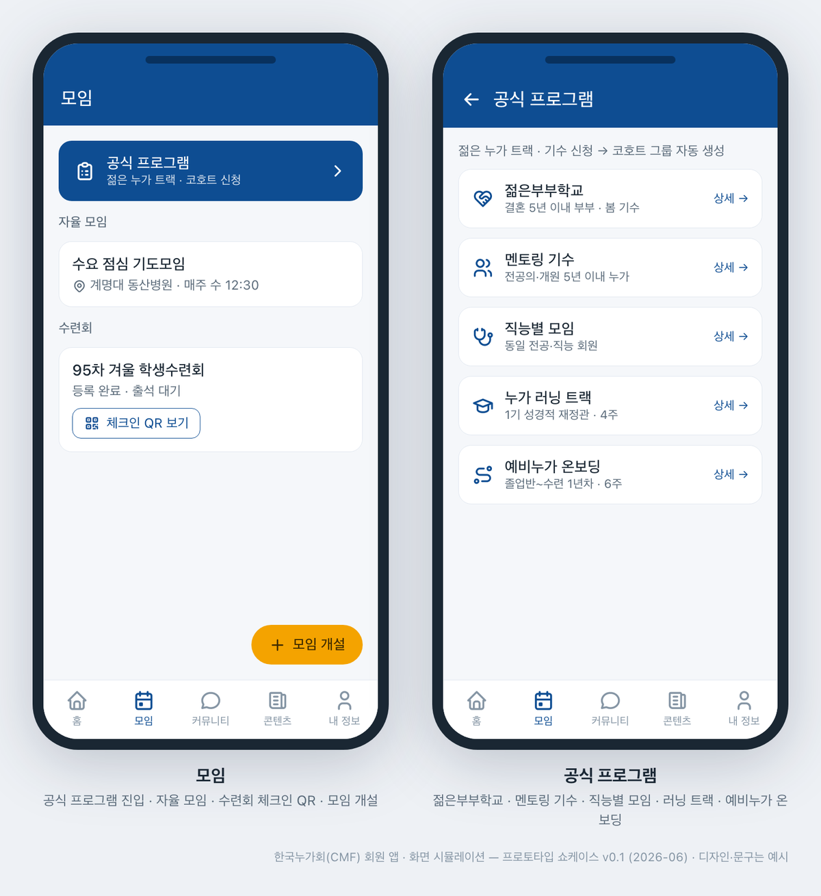
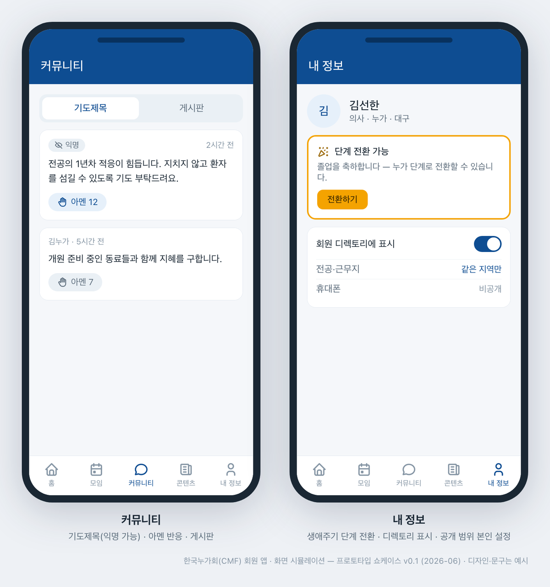
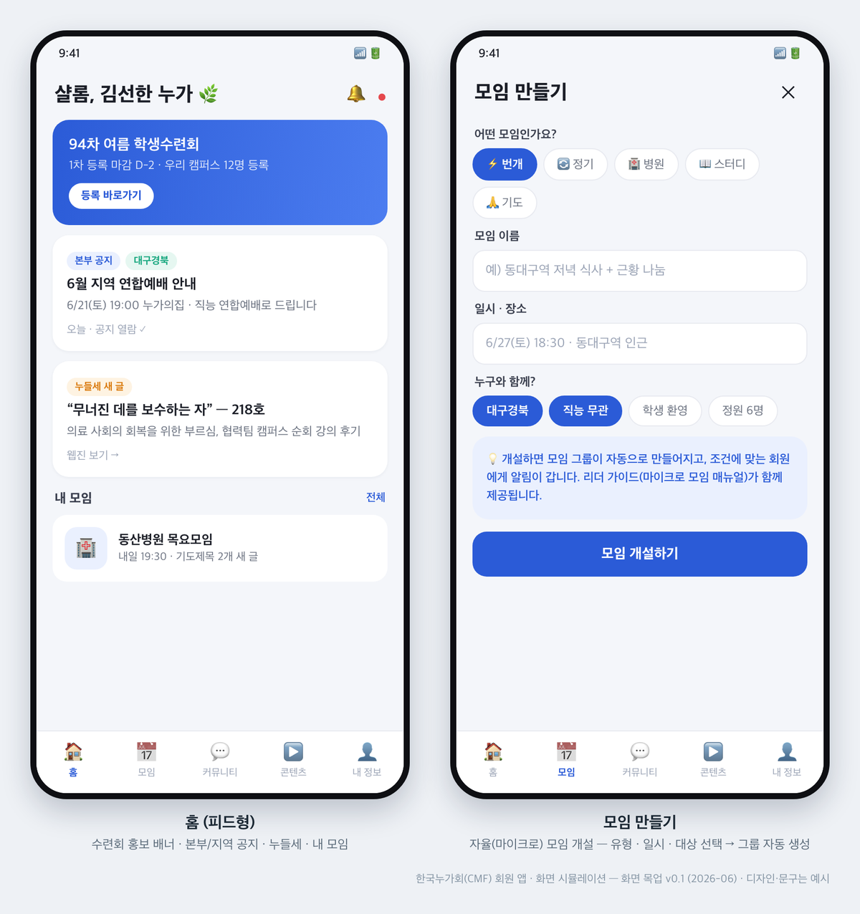

초안 — 학사학원사역부 이사회 미승인, 간사·이사 의견 반영 예정 주관: 한국누가회 학사학원사역부 · 작성 2026-08-22 · 작성 실무: 협력팀(협력팀장 이상협 이사) — 명의·내용은 부서 이사회 승인으로 확정한다. 수신: 중앙이사회 이사·감사 · 지위: 8/29 중앙이사회 안건 ③(학사누가 멤버케어) 관련 부서의 실행 대안 → 10월 부서 이사회 상정안의 골격.
한 줄 입장 — 학사누가 멤버케어의 필요에 동의한다. 부서는 영역을 지키려는 것이 아니라 내규 제3조②(지역누가회 협력·지역 담당간사 위촉)를 실행하겠다는 것이며, 이 문서가 그 실행 계획이다. 10월 부서 이사회 확정 → 2027년 시행 → 2027년 하반기 중앙이사회 결과 보고. 구조에 관한 논의는 그 보고 위에서 한다.
요지 — 소집건의 학사누가 9,187명은 회원관리특위가 3년에 걸쳐 정리한 데이터에서 나온 숫자다. 숫자를 다투지 않고 층을 나누어(2장), 새 조직보다 규정이 이미 나눠 놓은 세 주체(부서·누가임원·회원관리특위)를 잇는 장치를 먼저 세운다(1-4). 4축(①소통·리포팅 ②연결 ③케어 ④인력·거버넌스)+지속가능 재정 기반+회원앱 공동 기반(3장), 분기 타임라인(4장), 역할·사회부·선교부 장기 연계(5장), 사전 약정 평가 기준 4개로 달성·미달을 있는 그대로 보고한다(6장).
배경 — 왜 지금, 왜 부서가
1-1. 같은 문제를 보고 있다
- 데이터. 회원관리특위가 3년에 걸쳐 정리한 회원 데이터는 학사누가 돌봄의 공백을 숫자로 보여 주었다. 부서는 그 수고에 감사하며, 4/25 중앙이사회가 가결한 데이터 공유(지역·부서)의 첫 수요자가 되고자 한다(→ 2-1).
- 문제의식. 2026 정책수련회 회장님 발제 「지역누가회와 캠퍼스의 부흥과 멤버 케어」가 제기한 문제 — 캠퍼스에 힘을 쏟는 동안 졸업 후 학사 돌봄이 얇아졌다 — 에 동의한다. 발제의 전제 "못하고 있어서 빼앗아 오는 것이 아니다"와, 변화를 피하지 말자는 취지의 말씀에 부서도 같은 자리에서 답한다. 변화는 환영한다. 다만 그 형태는 새 부서가 아니라, 규정에 있으나 가동되지 않은 협력 모델의 실행이라고 본다.
- 소통의 문서화. 4/25 중앙이사회에서 "작년부터 요청했으나 답신이 없었다"는 지적이 있었다. 부서는 그동안 대표·간사대표를 통해 여러 차례 소통을 시도해 왔으나, 정례화된 문서 보고의 통로가 없어 전달되지 않은 부분이 있었다. 로드맵의 첫 축이 그 통로를 만드는 것이다 — 문서화하여 지속적으로 소통하고, 답신은 사람이 아니라 제도가 하게 한다(→ 1-2).
1-2. 부서는 들었다 — 2026-04-18 정책 간담회
| 자료 | 내용 | 읽히는 것 |
|---|---|---|
| 개요 | 서울 누가의 집, 약 50~60명, 유튜브·줌 중계. 발제 3(신승철 IVF 대표간사·장현준 간사대표·이수진 대경간사) + 조별토론 5개 조 + 20~50대 학사 토크 + 공동 제안 정리 | 수요의 실측 |
| 현장이 말한 것 (사전 설문 11건 — 30대 9·기혼 10 / 조별토론 / 세대별 증언, 전원 익명) | 인턴·레지던트기 이탈과 졸업 5년 경과 후 재진입 곤란 · 30대 수련기·육아기 고립(평일 저녁 모임과 육아·교대근무 충돌) · 간호사 직능 소외 · 위기가정 상담 수요 · 다중 카톡방 피로 · 30~40대 키즈케어·가족캠프 · 졸업생 연락망·소액 재정 기여 체계 부재 · 배정형 멘토링·예비부부학교·병원모임·직능별 소모임 제안 | 감사의 원천은 사람, 요구의 방향은 구조 — 필요한 것은 더 많은 모임이 아니라 연결 장치 |
| 발제 통찰 | 신승철 — "기본만 하면 망하는 시기", 캠퍼스 사역은 흐르는 물, 학사사역의 수원지는 학원 / 장현준 — 돌봄의 대상인가 주체인가: 둘 다, 연결고리 사역(신입생·예비누가·병원모임·징검다리), 신입생 더블링(24·25학번) / 이수진 — 급진거북이·사부작사부작, 수혜자에서 참여자로, 한 대학병원 병원모임의 실증 | 학사사역과 학원사역은 한 물줄기 |
간담회는 「저부담 고연결」·「각자도생의 현장에서 유기적 공동체로」를 기조로 세 갈래 필요 제안 — ①디지털 구독 플랫폼(알림톡 일원화·학생 때부터 월 1만원 소액구독) ②멘탈 헬스·위기 상담·멘토링(익명 상담망) ③마이크로 모임 활성화·가이드라인(과별·직능별 번개모임·예비부부학교) — 을 정리하고 닫혔다. 축 1~3은 이 세 제안을 부서 과제로 옮긴 것이다.
1-3. 부서는 시작했다 — 그리고 달라지는 것
| 시점 | 실행 |
|---|---|
| 2025~ | 협력팀 — 누가·간사 모델팀 15명 가동, 4개 캠퍼스 파일럿, 서경 학사 소그룹 기시행 |
| 2/28~3/1 | 정책수련회 협력 발제 — 소프트랜딩 3단계(목양→멘토→동역)·상황별 마이크로 소그룹·운영 4주체(중앙·미디어위 / 부서 / 지역누가회 / 협력팀) |
| 4/18 | 정책 간담회 → 세 갈래 필요 제안 · 제안 발표 「학사학원사역의 새로운 도약」(저부담 고연결, Fixed→Fluid) |
| 8/7 | 제94회 학생수련회(등록 893명) 전체 회원 리포팅 — 부서 이사장·간사대표 공동 명의. 정기 소식 1호로 삼는다(소급 지정) |
| 8/13~15 | 제46회 학사수련회(양평 블룸비스타) 진행 · 기록 시리즈 발행(8/16) |
| 8/22 | 간담회 공식 결과보고서(수신 중앙이사회·운영위·부서 이사회)·리포팅 발행 — 정기 소식 2호 |
- 사실 한 줄. 간담회 세 제안의 후속 검토 주체를 4~8월에 세우지 못한 것은 사실이다(부서 대표 공석 6/27, 제94회 학생수련회 준비·진행 집중). 그래서 이 로드맵이 바꾸는 것은 사람이 아니라 구조다 — 협력팀 상설, 실행위 분기 점검, 분기 서면보고 제도, 사전 약정 평가 기준.
- 실행 구조는 두 가지다 — ①학사사역 전담 간사(10월 지정 예약)로 학사 라인을 세운다 ②케어의 실행 주체는 간사가 아니라 누가(멘토·협력누가·지역 임원)이고 간사는 연결을 설계한다. 4/25 이사장님께서도 "형식적인 조직 확대보다 실제 참여와 실행 중심의 사역"을 강조하셨다(회의록). 이 로드맵은 그 말씀에 실행으로 답하려는 것이다.
1-4. 왜 부서가 — 규정은 이미 세 주체를 나눠 놓았다
- 운영규칙 제5조 1호 전문: "학사학원사역부는 캠퍼스 복음 전도 및 회원의 전인적 신앙성장을 위한 지원활동을 담당하며 회원들의 관리는 누가임원들이 담당하고 말씀은 간사들과 학사학원사역부에서 추천한 누가들이 담당한다." 제1조②-2: "학생회원의 등록과 졸업이후 추적 관리는 회원관리특별위원회에서 관리하되 이사회에 분기별로 보고." 내규 제2조: 부서 범위는 "캠퍼스와 졸업한 학사". 내규 제3조②: 학사사역은 "지역누가회와 협력… 지역별 담당간사 위촉".
- 즉 규정은 신앙성장 지원·양육·연결 = 부서 / 회원 관리 = 누가임원(지역) / 등록·추적 데이터 = 회원관리특위로 세 주체를 이미 나눠 놓았다. 비어 있는 것은 주체가 아니라 세 주체를 잇는 장치다. 이 로드맵이 그 장치(담당간사·데이터 공유·멘토·소식)이고, 신설 부서는 넷째 주체를 더하는 일이다.
- 6/13 2분기 운영위는 멤버케어를 지부(운영규칙 제10조 소그룹)·「누가들의 삶」 공부로 정리하고, 부서 고유 업무(학사수련회)는 「부서 주도·중앙 운영위 지원」으로 정리하였다. 4/25 중앙이사회 정리 의견은 「구조 논의 이전에 사역 내용 정리, 역할 분담, 인력 확보 검토 필요」였다. 이 로드맵은 그 세 항목에 답한다 — 사역 내용(3장) · 역할 분담(5장) · 인력(축4: 전담 간사·담당간사 겸임·협력간사).
9,187명을 어떻게 읽는가 — 3층
숫자를 다투지 않되 한 덩어리로 읽지 않는다. 층마다 닿는 장치가 다르다. 상당수는 지역누가회·부서가 닿을 수 있는 범위 안에 있다고 보되, 층별 규모는 부서가 단정하지 않고 공유 데이터를 받는 즉시(2026 4Q) 센다.
| 층 | 누구인가 | 지금 닿는 장치 | 로드맵의 응답 |
|---|---|---|---|
| ① 이미 닿는 층 | 지역누가회 등록·정기모임·사경회·선교부·사회부 모임·학사수련회 참여자 | 있다 — 다만 부서·지역 사이에 명단과 소식이 오가지 않아 흩어져 보인다 | 축1 분기 소식 · 축2 데이터 활용으로 "연결되어 있음"을 보이게 한다 |
| ② 닿을 수 있으나 장치가 없는 층 | 30대 수련기·육아기(인턴·전공의·전임의), 지방·교대근무, 간호사 직능, 졸업 5년 경과 후 재진입 곤란자 | 없다 — 모임은 있으나 이 층을 부르는 장치(담당간사·멘토·소모임·상담 창구)가 없다 | 로드맵의 표적 — 축2(담당간사·멘토·마이크로 모임) + 축3(상담망·가족 단위·직능 돌봄) |
| ③ 은퇴 전후 시니어층 | 내규 문언상 학사이나, 부서의 현행 사역 설계(캠퍼스~30대 이행기)가 닿지 않는 실질 공백 | — | 이 로드맵의 범위 밖으로 두고 사실로만 기록한다 |
- 새 부서를 세워도 일할 사람과 재정은 지금 있는 지역누가회와 부서에서 나온다(4/25 가안도 사역자 추가 임명과 재정을 각 부서·지역이 분담하는 구조였다). 가장 빠른 길은 지금 있는 조직이 ②층에 닿도록 장치를 만드는 것이다. 새 이름표보다 실행 계획이 답이다 — 조직이 사역을 만들지 못하고, 사역이 조직을 부른다.
로드맵 4축 + 지속가능 재정 기반
표기: 2026H2 = 2026 하반기 / 2027H1·H2 = 2027 상·하반기. 예산 급 = 무예산(기존 인력·수단) / 소액(일회성·연 단위 소규모) / 중간(상시·반복 비용, 외부 전문 인력). 10월 부서 이사회 전(2026H2) 항목은 「준비 과제(조사·초안)」이며 주체는 간사대표·협력팀이다. 운영 개시는 부서 이사회 확정과 담당 확보 후로 한다. 수치·담당은 초안이며 간사·이사 의견으로 조정한다. 협력 기관(회원관리특위·미디어위·가정사역위·지역누가회)과는 협의 예정이다.
축 1 — 소통·리포팅: 답신은 제도가 한다
| 항목 | 무엇을 | 책임(직책) | 시점 | 지표 | 예산·재원 |
|---|---|---|---|---|---|
| 1-1 분기 「학사학원사역부 소식」 | 전체 회원 소식 연 4회. 1호 94회(8/7)·2호 간담회(8/22) 기발행 → 3호 2026 4Q(46회 학사수련회·하반기 사역·로드맵 확정) → 2027 매 분기 말 | 부서 이사장·간사대표 공동 명의, 협력팀 편집 | 2026 4Q → 분기별 | 발행 횟수, 도달 건수 | 무예산 / 부서 |
| 1-2 분기 서면보고 ★ | 운영규칙 제5조·제7조 10호의 보고 의무를 분기 1장 서면보고로 제도화 — 운영위 분기 정기회의(제4조②) 제출 + 중앙이사회 회기마다 서면 송부 | 부서 이사장(대표 선임 후 대표) | 10월 확정 직후 1회차 → 매 분기 | 보고 횟수(연 4회), 회의록 첨부 | 무예산 |
| 1-3 디지털 접점(간담회 ①) | 공지 채널 실태 파악 → 개인정보 동의 체계 정비 → 알림톡 발신 채널·공지 일원화 → 소액 정기구독 설계안(재-3). 회원앱 맞춤 알림 채널 구독(학교·지역·사역부)과 연동 | 간사대표 라인 + 미디어위 공동(부서 콘텐츠·미디어위 채널) | 2026H2 실태·동의 / 2027H1 알림톡 파일럿 / 2027H2 구독 설계안 | 채널 개설, 파일럿 도달률 | 소액 / 부서·중앙 지원 요청 |
축 2 — 연결: 데이터를 관계로
| 항목 | 무엇을 | 책임(직책) | 시점 | 지표 | 예산·재원 |
|---|---|---|---|---|---|
| 2-1 회원관리특위 데이터 공유·활용 ★ | 4/25 가결분(5월 업데이트본)을 부서가 첫 수요자로 공유 신청, 활용 범위·보안을 특위와 협약. 학사 연락·모임 안내·소식 발송·층별 규모 산출에 활용. 회원앱 명부 매칭·셀프 갱신으로 양방향화. 데이터 관리 책임자 1인 지정 | 협력팀장(협의) → 전담 간사(지정 후) ↔ 특위 위원장님 | 2026 4Q 신청·협약 → 층별 규모·30대 도달률 기준선 / 2027 3Q 재측정 | 활용 개시, 활용 건수, 30대 도달률 | 무예산 |
| 2-2 지역누가회 담당간사 위촉(내규 제3조②) ★ | 전임간사 중 지역별 1인 — 해당 지역에 이미 배치된 전임간사의 겸임(추가 인력 0, 캠퍼스 배치 불변), 전담 간사의 1지역 겸임 가능. 시범 2지역(지역누가회와 협의 후 확정)은 설계 검증용, 결과에 따라 전 지역 확대 | 부서 이사회 의결 → 부서 이사장 위촉 | 10월 의결 → 2027 1Q 가동 → 2027H2 평가 | 위촉 수(2), 지역별 분기 연결 보고 | 무예산 |
| 2-3 30대 소프트랜딩 멘토 연결 | 졸업·이행기 학사에게 선배 누가 멘토를 배정형(선배가 먼저 연락)으로, 3단계(목양→멘토→동역). 실행은 누가(모델팀·협력누가), 간사는 설계. 회원앱 멘토-멘티 매칭 기능으로 신청·배정 | 협력팀장 + 담당간사 + 지역누가회 | 2026H2 배정 원칙 초안 / 2027H1 파일럿 / 2027H2 평가 | 배정 쌍 수(초안 10쌍 내외), 6개월 연락 유지율 | 무예산 |
| 2-4 마이크로 모임 가이드(간담회 ③) ★ | 자생 소모임 실태 파악·목록화 → 매뉴얼 v1 → 시범 지원. 과별·직능별·번개·예비부부학교 + 기존 병원모임(간사 동행·소규모) 모델 안내. 인준은 운영규칙 제10조(운영위)대로, 부서는 가이드·연결·지원. 회원앱 자율 모임 개설·자발 홍보 배너로 이어지게 | 협력팀장 + 지역 간사·담당간사 | 2026H2 매뉴얼 v1 / 2027H1 시범 지원 3~5개 / 2027H2 예비부부학교 1기 | 매뉴얼 발행, 개설 수(병원모임 포함), 참여 인원 | 소액~중간 / 부서 예산 항목 신설 심의·지역 분담 협의 |
축 3 — 케어
| 항목 | 무엇을 | 책임(직책) | 시점 | 지표 | 예산·재원 |
|---|---|---|---|---|---|
| 3-1 상담·멘탈헬스·멘토링 연결망(간담회 ②) ★ | 회원 내 전문의·상담 전문가 풀, 외부 기관 후보 조사 → 익명 접수·비밀보장 구조 설계(접수 창구는 회원앱 후보) → 시범(담당 확보 후 개시) | 협력팀장(설계) → 전담 간사(운영) + 가정사역위·전문 누가 풀 | 2026H2 조사 / 2027 2Q 설계안 운영위 보고 / 2027H2 시범 | 설계 완료, 전문가 풀 수, 접수 건수(비식별) | 설계 무예산 / 운영 중간 / 후원·중앙 지원 요청 |
| 3-2 「누가들의 삶」 강좌 | 회장님 구상(6/13 운영위 정리)을 수용 — 부서는 학사 대상 홍보·참여 연결·온라인 채널을 제공하되 독점하지 않는다(지역·위원회 강좌에도 연다). 주최·강사 구성 형식은 운영위와 협의 | 주최 형식 협의 / 부서 = 회원 접점 | 2027 2Q 1기 | 강좌 수, 학사 참여 인원 | 소액 / 중앙·부서 |
| 3-3 30~40대 가족 단위 프로그램 | 키즈케어·가족캠프 시범 1회 | 부서 + 지역누가회 | 2027H2 | 개최 여부, 참가 가족 수 | 소액 / 부서·지역·후원 |
| 3-4 간호사 직능 돌봄 | 직능별 소모임(안전망)을 먼저, 연합은 그 위에 — 간호 누가 소모임 시범 1개 | 협력팀장 + 간호 누가 리더 | 2027 | 개설 여부, 참여 인원 | 무예산 |
축 4 — 인력·거버넌스
| 항목 | 무엇을 | 책임 | 시점 | 지표 |
|---|---|---|---|---|
| 4-1 후임 대표 선임 | 기왕 예약 안건. 선임 시 로드맵 총괄 책임 이관 조항 포함. 선임 전까지는 간사대표 운영위 참석 + 감사 보완 체제(6/27 임시이사회) | 부서 이사회 | 10월 부서 이사회 | 선임 여부 |
| 4-2 학사사역 전담 간사 지정 | 6/27 감사 제안·이사장 수용분(기왕 예약). 지정 시 축2·3 실무 이관 — 학생 우선 구조와 분리된 학사 라인 | 부서 이사회 | 10월 부서 이사회 | 지정 여부 |
| 4-3 협력간사·협력누가 확충 | 내규 제19조(협력간사·누가협력간사) 트랙, 누가훈련원 수료자 연계 — 임면은 내규 제20조③ 절차(대표 선임 후) | 간사회 + 협력팀 | 2027H1 모집 | 위촉 수 |
| 4-4 실행위 분기 점검 | 대표 선임 후 실행위 재구성(내규 제13·14조) → 로드맵 항목별 분기 점검, 1-2와 연동 | 대표(실행위원장) | 2027 매 분기 | 점검 횟수(4) |
(+) 지속가능 재정 기반
| 항목 | 무엇을 | 책임 | 시점 | 지표 |
|---|---|---|---|---|
| 재-1 후원 요청 | 부서 청사진(본 로드맵)·부서 앱(학생수련회 등록 시스템을 진입점으로 하는 회원 접점 앱 — 개발·시점은 젊은 누가와 협의)과 연계한 10월 후원 요청 | 부서 이사회·간사회 | 10월 | 요청 발송, 신규 약정 수 |
| 재-2 모금 훈련 | 학생·젊은 누가의 모금 참여 훈련 — "수혜자에서 참여자로" | 간사회 + 협력팀 | 2027 | 실시 여부 |
| 재-3 소액 정기구독 | 1-3 구독 모델(학생 때부터 월 1만원) — 회원 접점이 먼저, 재정은 그 결과. 미디어위·중앙과 공동 설계 | 간사대표 라인 + 미디어위 | 2027H2 설계안 | 설계안 제출 |
(+) 회원앱 — 연결의 공동 기반
로드맵의 축1~3(소식·알림·데이터→관계·모임·멘토·상담 접수)을 한 화면에 모으는 도구가 부서 회원앱이다. 앱은 회원 관리의 주체를 바꾸지 않는다 — 주체는 규정대로(부서·누가임원·회원관리특위)이고, 앱은 세 주체를 잇는 장치를 회원의 손안에 두는 수단이다.
| 구분 | 내용 |
|---|---|
| 현황 | 동작 프로토타입 가동 중(5탭: 홈·모임·커뮤니티·콘텐츠·내정보 + 공식 프로그램·관리자). 카카오 로그인 실동작 검증(2026-08-10), 명부 매칭 온보딩·생애주기 전환·출석 QR·콘텐츠 탭·멘토-멘티 매칭·맞춤 알림 채널 구독까지 데이터 기반 구축 완료. 자체 개발(부서 협력팀 주도)로 운영비는 클라우드·배포 구독 수준(소액) |
| 진입점 | 수련회가 최대 유입 경로 — 학생수련회(연 2회)·학사(누가)수련회·지역 징검다리 수련회·집중훈련학교. 미디어 위원회가 개발·운영해 온 기존 수련회 등록 시스템을 확인한 결과 충분한 진입점이다(직전 학생수련회 등록 973건·회원 마스터 1,542명 규모). 학생은 수련회 신청으로 앱에 처음 들어오고, 졸업 후에도 같은 계정으로 이어진다 |
| 방향 | 기존 수련회 등록 시스템의 기능을 앱으로 단계적 이전(미디어 위원회와 협의·기존 시스템을 낙하산으로 병행) — 1순위 관문은 수련회 모듈. 파일럿 = 2026년 겨울 제95회 학생수련회(등록 → 조편성·현장 → 잔여 기능 순) |
| 의견 청취(진행 중) | 미디어 위원회·간사들·젊은 누가들(학생수련회 운영위원장 등)·협력팀의 의견을 모으고 있다 — 활용 가능성을 실사용자와 함께 확인하며 만든다 |
| 로드맵에서 하는 일 | 축1: 분기 소식·공지 채널 일원화·맞춤 알림 구독(학교·지역·사역부) / 축2: 특위 공유 데이터 위에 명부 양방향화(회원 스스로 갱신), 자율 모임 개설·자발 홍보 배너, 30대 소프트랜딩 멘토-멘티 매칭 / 축3: 상담·멘토링 접수 창구(익명) / 재정: 소액 정기구독 접점 |
| 콘텐츠 | 간담회 자료(발제·현장 목소리·세 갈래 제안)를 기반으로 학사학원사역부 제공 콘텐츠(강의·누들세·숏폼 등)를 간사대표와 개발 중, 협력팀이 편집·연결 역할 |
| 책임 | 협력팀장(설계·개발 총괄) + 간사대표(콘텐츠·운영) · 미디어 위원회(등록 시스템 이전·채널) 협의 · 10월 부서 이사회 보고 |
| 시점 | 2026 4Q 95회 등록 파일럿(Phase 1) → 2027 1Q 조편성·현장(Phase 2) → 2027 모임·멘토·알림·콘텐츠 가동, 잔여 기능 이전(Phase 3) → 2027 하반기 평가 보고에 앱 지표 포함 |
| 지표 | 95회 등록의 앱 처리 비율, 가입·온보딩 수, 앱 내 모임 개설 수, 알림 채널 구독 수, 멘토 매칭 쌍 수 |
| 화면 시뮬레이션 | 붙임 C — 홈·콘텐츠 / 모임·공식 프로그램 / 커뮤니티·내 정보 / 홈 배너·모임 개설 (프로토타입 쇼케이스 기준, 디자인·문구는 예시) |
새로 제도화하는 것 5가지(★)
| 항목 | 지금까지 | 로드맵 | 확인 시점 |
|---|---|---|---|
| 분기 서면보고(1-2) | 규정상 의무이나 부정기·구두 | 운영위 분기 정례보고 + 중앙이사회 회기 서면 송부 | 10월 확정 직후 |
| 데이터 공유·활용(2-1) | 4/25 가결 후 부서 미신청 | 첫 수요자로 협약·활용, 층별 규모·기준선 산출 | 2026 4Q |
| 지역 담당간사 위촉(2-2) | 내규 제3조② 조문만 있고 미집행 | 시범 2지역 위촉·가동 | 2027 1Q |
| 상담·멘토링 연결망(3-1) | 없음 | 설계 → 시범 | 2027 2Q 설계안 |
| 마이크로 모임 가이드(2-4) | 자생 모임 산재 | 매뉴얼·지원 기준·시범 | 2027H1 |
앞의 셋은 규정·의결에 이미 있으나 집행되지 않던 것을 제도로 세우는 것이고, 뒤의 둘은 간담회 제안을 부서 과제로 새로 채택하는 것이다. 둘 다 시점·지표·예산 급을 붙였다.
일정 — 분기 타임라인
| 분기 | 주요 실행 (주체) | 보고 |
|---|---|---|
| 2026 3Q(8~9월) | 8/29 중앙이사회 로드맵 예고(의결 요청 없음) · 간사·이사 의견 수렴으로 초안 보완 · 비공식 준비·협의: 공지 채널·자생 소모임 실태 파악, 특위 위원장님과 데이터 활용 범위 사전 협의 (간사대표·협력팀) | — |
| 2026 4Q | 10월 부서 이사회¹: 로드맵 확정(내규 제12조①②)·후임 대표 선임·전담 간사 지정·담당간사 위촉 의결 · 확정 직후 데이터 공유 신청 → 층별 규모·30대 도달률 기준선 · 소식 3호 · 10월 후원 요청 · 매뉴얼 v1·멘토 배정 원칙·상담 자원 조사 초안 · 회원앱 95회 겨울 학생수련회 등록 파일럿(Phase 1) | 확정 직후 운영위·중앙이사회 서면보고 1회차 |
| 2027 1Q | 시범 2지역 가동(담당간사·멘토 파일럿) · 알림톡 파일럿 · 소모임 시범 지원 선정 · 회원앱 조편성·현장 운영(Phase 2)·모임·멘토·알림 기능 가동 · 소식 | 분기 서면보고 |
| 2027 2Q | 「누가들의 삶」 1기(주최 형식 협의) · 상담망 설계안 운영위 보고 · 소식 | 분기 서면보고 |
| 2027 3Q | 가족 프로그램 시범 · 예비부부학교 1기 · 상담망 시범 · 30대 도달률 재측정 · 사회부·선교부 연계 방안 초안 · 소식 | 분기 서면보고 |
| 2027 하반기 | 운영위 평가(6장 약정 기준 4개) → 중앙이사회 결과 보고 — 구조 논의 필요 여부는 이 보고 위에서 판단 | 중앙이사회 결과 보고 |
| 상시 | 중앙이사회 회기마다 경과 서면 보고 — 평가 보고까지 기다리지 않고 중간 확인이 가능하다 | 회기별 |
¹ 정기이사회의 일정·형식은 내규에 따라 이사장이 소집 시 확정한다. 「10월 부서 이사회」는 후임 대표 선임·전담 간사 지정이 예약된 회의를 가리킨다.
- 1년은 유예가 아니라 검증 기간이다. 시범 지역·분기 서면보고·회기별 경과 보고로 중간 검증이 가능하다.
역할 분담
| 주체 | 역할 | 근거 |
|---|---|---|
| 학사학원사역부(이사회·실행위·간사회·협력팀) | 주관·실행·보고 — 담당간사 위촉, 멘토·소모임·상담망 설계, 분기 소식·서면보고, 신앙성장 지원·양육·연결 | 내규 제2조·제3조②, 운영규칙 제5조 1호 전단 |
| 운영위원회·중앙이사회 | 관리·감독(운영규칙 제5조) + 데이터·재정·홍보 지원. 부서 대표·간사대표는 운영위원(제4조①)으로 보고·협의 | 운영규칙 제4조·제5조 |
| 지역누가회 | 현장 실행 파트너 — 회원 관리(누가임원), 담당간사·멘토 수용, 소모임·병원모임 운영, 졸업생을 맞이할 준비 | 운영규칙 제5조 1호 후단, 내규 제3조② |
| 회원관리특위 | 등록·졸업 후 추적 데이터의 주체 — 부서는 공유받아 활용(협약) | 운영규칙 제1조②-2, 4/25 가결 |
| 미디어위·가정사역위 | 채널·플랫폼 공동 / 상담·가정 강좌 협력(협의 예정) | — |
| 협력팀 | 부서·지역·위원회 사이의 완충과 연결 — 고립 방지 · 회원앱 설계·개발 | 2026 정책수련회 협력 발제 |
| 선교부·사회부 | 장기 연계 파트너 — 학사 참여 접점(의료봉사·선교 동원 / 사회 실천·교육) 공동 설계(→ 5-2) | 운영규칙 제5조 2·3호 |
5-2. 장기 — 사회부·선교부와의 연계·협력
학사의 생애주기는 학원(캠퍼스)→학사(병원·지역)→선교·사회 실천으로 이어진다. 부서는 시행 1년 동안 선교부(국내외 의료봉사·단기선교·선교 동원 — 학사에게 가장 자연스러운 참여 접점)·사회부(핵심가치의 사회 실천·연구·교육)와 프로그램·소식·데이터를 잇는 부서 간 협력 모델을 설계하고, 2027 하반기 평가 보고에 그 초안을 포함한다. 연계는 부서 범위를 넓히는 것이 아니라 — 학사가 부서 사이를 옮겨 다니지 않고도 한 흐름으로 참여하게 하는 것이다.
보고·평가 약속
6-1. 보고. 분기 소식(전체 회원) · 분기 서면보고(운영위 정기회의, 중앙이사회 회기마다 송부) · 시범 지역 결과는 나오는 대로 보고한다.
6-2. 사전 약정 평가 기준 — 2027 하반기 운영위 평가·중앙이사회 보고 시 아래 4개로 달성·미달을 있는 그대로 적는다.
| # | 기준 | 확인 방법 |
|---|---|---|
| ① | 시범 2지역 담당간사 위촉·가동(2027 1Q) 및 분기 연결 보고 | 위촉 기록·보고서 |
| ② | 분기 서면보고 4/4 · 분기 소식 4/4 | 회의록 첨부·발행본 |
| ③ | 30대 연락 도달률 — 2026 4Q 기준선 대비 2027 3Q 재측정 개선(목표치는 기준선 산출 직후 운영위 보고 시 확정) | 공유 데이터 대비 도달 집계 |
| ④ | 상담·멘토링 연결망 설계안 운영위 제출(2027 2Q) + 멘토 배정 파일럿 실시 | 설계안·배정 명부(비식별) |
- 평가 주체: 운영위원회(부서 대표·간사대표 운영위원 참여, 회원관리특위 데이터로 대조) → 중앙이사회 보고. 달성·미달을 있는 그대로 적어 보고한다. 수치 목표는 10월 부서 이사회에서 간사·이사 의견으로 확정하되, ③의 목표치는 기준선 산출(2026 4Q) 후 운영위 보고 시 확정한다.
6-3. 물으실 수 있는 것
| 물음 | 답 | 본문 |
|---|---|---|
| 작년부터 요청했는데 답이 없었다 | 소통 시도는 여러 차례 있었으나 정례 문서 보고의 통로가 없었다. 소식 1·2호로 시작했고 분기 서면보고로 그 통로를 제도화해 지속적으로 소통한다 | 1-1·1-3 |
| 데이터가 사각지대를 보여 준다 | 동의한다. 부서가 첫 수요자로 공유받아 쓰고, 3층으로 읽어 ②층을 표적으로 삼는다 | 2·2-1 |
| 부서가 지금 할 수 있나 — 대표도 공석인데 | 10월 부서 이사회에 후임 대표 선임·전담 간사 지정이 예약돼 있고, 그 전 과제는 준비(조사·초안)로 한정했다. 공석은 구조 변경의 근거가 아니라 10월 인선의 사유다 | 3·4 |
| 담당간사 2명이면 캠퍼스는 누가 보나 | 담당간사는 지역 배치 전임간사의 겸임이라 캠퍼스 배치는 변하지 않고, 케어 실행은 누가(멘토·협력누가·지역 임원)가 한다 | 1-3·2-2 |
| 이미 하던 것의 재포장 아닌가 | 새로 제도화하는 것 5가지에 시점·지표·예산 급을 붙였다 | 3 |
| 1년은 시간 끌기 아닌가 | 평가 기준 4개를 미리 약정했고, 회기마다 경과를 서면으로 보고한다. 시범 지역·분기 보고로 중간 검증이 가능하다 | 4·6 |
| 못하고 있어서 빼앗아 오는 것이 아니다 | 동의한다. 그래서 부서의 답은 "지키겠다"가 아니라 "내규 제3조②를 실행하겠다"이다 | 1-1 |
| 앱은 또 하나의 시스템 아닌가 | 미디어 위원회의 수련회 등록 시스템을 이어받아 한 곳으로 모으는 것이다(미디어 위원회와 협의·단계적 이전). 수련회가 최대 진입점이라 회원관리·모임·소식이 같은 계정 위에 선다 | 3 (+)회원앱 |
중앙이사회에 드리는 요청
- 8/29 — 안건 ③을 충분히 토의해 주시되, 부서 로드맵은 이 자리에서 예고하며 의결을 요청하지 않는다. 구조에 관한 사항은 운영위원회에 회부하여 부서 의견서와 본 로드맵을 함께 심의해 주시기를 요청한다(근거 규정은 붙임 A).
- 10월 부서 이사회에서 로드맵을 확정하고, 확정 직후 운영위·중앙이사회에 서면으로 보고한다.
- 2027년 하반기 중앙이사회에 시행 결과를 약정 기준(6-2)으로 보고한다. 구조 논의의 필요 여부는 그 보고 위에서 판단해 주시기를 요청한다.
- 지원 요청 — 회원관리특위 데이터 공유 절차 확정 · 미디어 위원회 채널·등록 시스템 이전 협력 · 가정사역위 상담·강좌 협력 · 선교부·사회부 연계 설계 협의 · 10월 후원 요청에 대한 관심 · 중앙 차원의 홍보.
붙임 A. 근거 규정 (발췌)
출처: 정관(6차, 2024-01-13) · 운영규칙(18차·현행, 2026-04-04) · 학사학원사역부 내규(2024-11-16 개정). 행정실 최종본으로 1회 대조 예정.
| 구분 | 조문 | 내용(발췌) | 쓰임 |
|---|---|---|---|
| 운영규칙 | 제1조②-2 | 학생회원의 등록과 졸업이후 추적 관리는 회원관리특별위원회에서 관리하되 이사회에 분기별로 보고 | 데이터 주체 = 특위, 부서는 공유받아 활용 |
| 〃 | 제4조①② | 운영위원회 구성 — 각 지역누가회 회장, 각 부서의 대표, 간사대표 … / 정기회의는 매분기 | 부서 의견의 공식 통로, 분기 보고의 자리 |
| 〃 | 제5조(부서) · 제7조 10호 | 부서는 사역을 실제적으로 기획·실행하며 정기적으로 운영위원회에 보고하고 운영위원회의 관리와 이사회의 감독을 받는다. 1. 학사학원사역부는 캠퍼스 복음 전도 및 회원의 전인적 신앙성장을 위한 지원활동을 담당하며 회원들의 관리는 누가임원들이 담당하고 말씀은 간사들과 학사학원사역부에서 추천한 누가들이 담당한다. 2. 선교부 3. 사회부 / (7조 10호) 부서는 중앙이사회가 정한 방법대로 운영위원회와 총회에 업무를 보고 | 세 주체 분담의 본문 · 서면보고 의무 · 부서 신설은 5조의 개정 사안 |
| 〃 | 제9조(위원회·특별위원회) | 위원회는 운영위원회 소속, 특별위원회는 이사회 소속 | 가정사역위(운영위)·회원관리특위(이사회)와의 협력 구도 |
| 〃 | 제10조(소그룹) | 10인 이상, 운영위원회가 인준 | 6/13 「지부」·마이크로 모임 인준 경로 |
| 〃 | 제13조 | 부서·지역누가회 회칙이 본 규칙과 마찰될 때는 본 규칙을 따른다 | 로드맵은 제5조 1호의 분담 위에서 설계 |
| 〃 | 제14조(규칙의 수정) | 본 규칙은 운영위원회에서 의결을 하여 이사회에서 인준하여 수정할 수 있다 | 요청 1(운영위 회부)의 근거 |
| 정관 | 제30조 8호·10호 | 이사회 의결사항 — 운영규칙의 제정과 변경 · 부서의 내규 인준 | 제·개정권은 이사회, 그 절차가 제14조 |
| 내규 | 제2조 | 의·치·한의·간호 캠퍼스와 졸업한 학사 | 학사누가 케어는 부서 사역 범위 |
| 〃 | 제3조② | 학사사역은 지역누가회와 협력하여 각 지역의 상황에 맞게 지역누가회의 사역을 돕는 것을 기본 방향으로 삼는다. 이를 위해 전임간사 중 지역별로 1인씩을 지역누가회 담당간사로 위촉할 수 있다 | 축2의 근거 — 이 조문의 실행 |
| 〃 | 제12조①②④ · 제13·14조 | 이사회 의결사항 — 업무집행 · 사업계획의 운영 · 내규 등 규정변경 / 대표가 실행위원회를 설치하고 실행위원장이 된다 | 10월 확정(12조①②) · 범위 규정 변경 발의(④) · 실행위 재구성은 대표 선임 후 |
| 〃 | 제19조·제20조③ | 협력간사·누가협력간사는 무보수 자비량 원칙 / 협동·협력간사 임면은 이사장·대표·회장·간사대표·해당지역 누가회장 5인이 결정 | 축4 협력간사 트랙 |
| 〃 | 제37조 | 내규는 실행위 논의 → 부서 이사회 결의 → 중앙 운영위 심의 → 중앙이사회 인준으로 수정 | 부서 범위 규정 변경의 발의 주체 |
- 관련 기록: 4/25 중앙이사회(학사누가 케어 — 의결 없이 토의 종결, 정리 의견 「사역 내용 정리·역할 분담·인력 확보 검토」 / 회원 데이터 지역·부서 공유 가결) · 6/13 2분기 운영위(멤버케어 → 지부·「누가들의 삶」 공부 / 학사수련회 → 부서 주도·중앙 운영위 지원 / 신설 부서 안건 상정 없음) · 6/27 부서 임시이사회(후임 대표 10월 선임·전담 간사 제안 수용).
붙임 B. 간담회 결과 — 상세 자료
간담회(2026-04-18)의 발제 요지·현장 데이터·세 갈래 필요 제안·세대별 목소리(익명)는 공식 결과보고서(수신: 중앙이사회·운영위·학사학원사역부 이사회, 2026-08-22)에 정리되어 있다 — 열람 링크(이사회 공유용·비공개): https://wiki.youngdoctor.kr/marktl/s/vs3ug4/
붙임 C. 회원앱 화면 시뮬레이션 (프로토타입 쇼케이스 v0.1 기준 · 디자인·문구는 예시)




📄 인쇄용 PDF: 학사사역_강화_로드맵_v2_풀버전.pdf